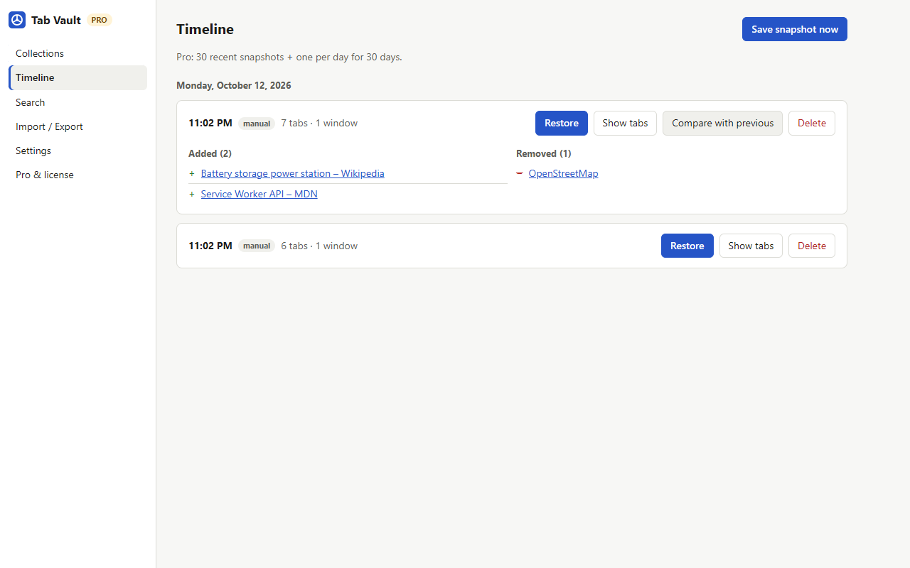
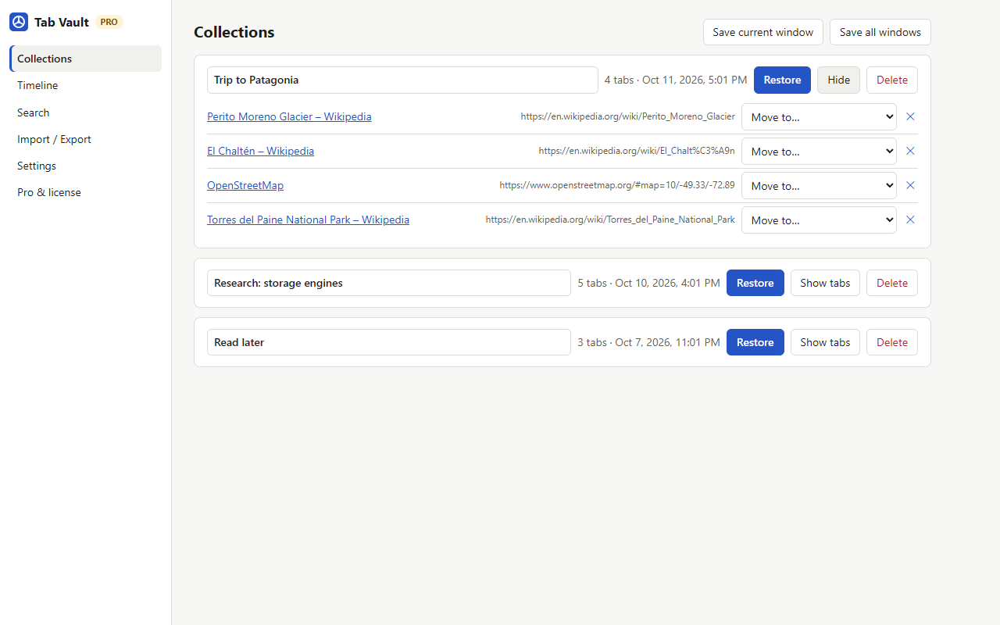
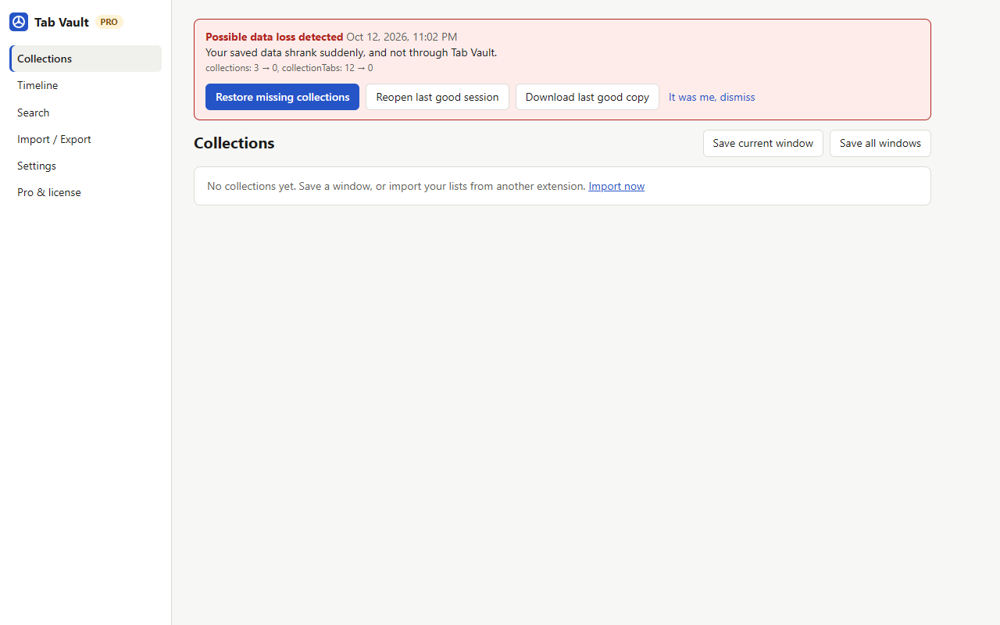
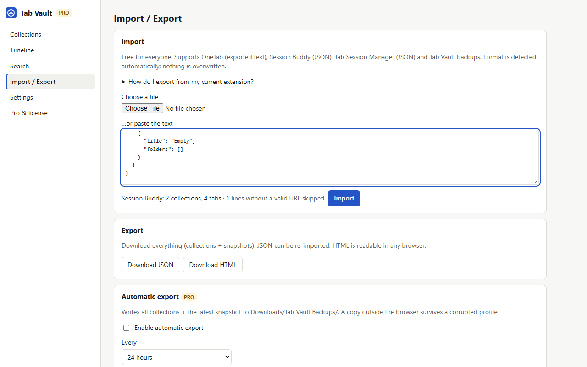
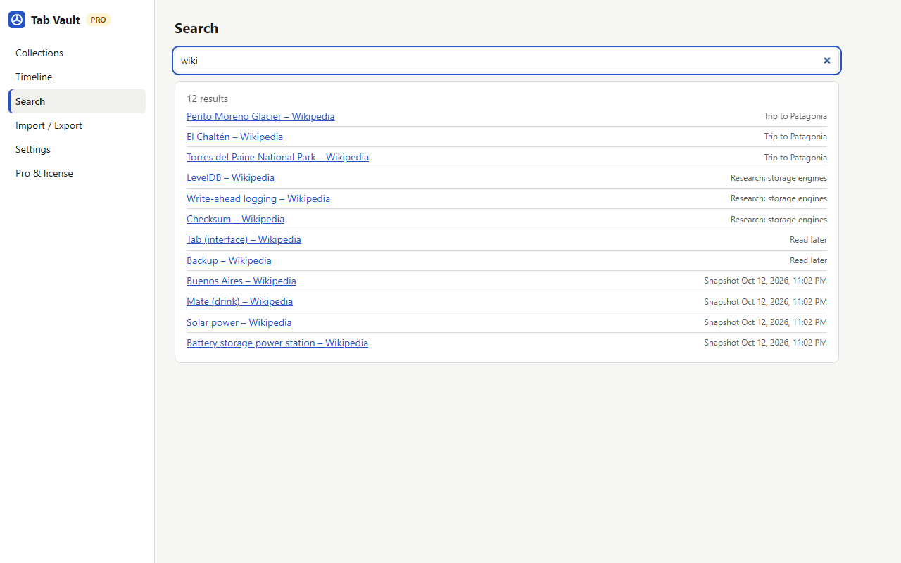

A safety net for your tabs.
Tab Vault keeps versioned snapshots of every window, copies them outside the browser, and warns you the moment your saved tabs suddenly shrink.
No account. No server. No analytics. Import from OneTab, Session Buddy and Tab Session Manager for free.

Built for the day something goes wrong
Versions, not one list
Automatic snapshots every few minutes, on tab close and at browser start. Restore a whole session, one window or a single tab.
A copy outside the browser
Export to JSON or HTML anytime. Pro writes a backup file to your Downloads folder on a schedule.
Early warning
Tab Vault checks its own data. If it suddenly drops or can't be read, you get a red alert and the last good copy.
Saved lists
Send a window to a named collection and close it to free memory. Rename, move tabs, restore all or one.
Light restore
Reopened tabs stay unloaded until you click them, so restoring hundreds of tabs doesn't freeze your machine.
Free migration
Paste your OneTab export or pick a Session Buddy / Tab Session Manager file. Nothing is overwritten.
See it




Pricing
Free
Last 5 snapshots · unlimited collections · all importers · manual export · data-loss alert · search in collections
Pro ONE-TIME
30 recent snapshots + 1 per day for 30 days · scheduled export to a file · compare versions · search all history · guided restore · up to 3 devices
Why one-time?
There is no server to pay for: your data never leaves your browser. If Pro ever ends, nothing is deleted. 14-day refund.
FAQ
Will I never lose tabs again?
No software can promise that. Tab Vault keeps several versions, a second copy in a separate storage area, optional export files outside the browser, and an alert when data suddenly drops. Keep an exported copy of anything important.
Does it upload my tabs?
No. There is no server or account. The only network request is the Pro license check, which sends your key — never URLs or titles. Privacy policy.
How do I move from OneTab or Session Buddy?
Export from your current extension and import into Tab Vault. Step by step: migration guide.
Does it work in Firefox?
Yes. Tab groups are a Chrome feature, so they're skipped in Firefox; everything else works the same.
What happens if I uninstall it?
The browser deletes the extension's storage. Export first (Import / Export → Download JSON). Tabs that Tab Vault restored are normal tabs and stay open.
Does it save incognito tabs?
Never.